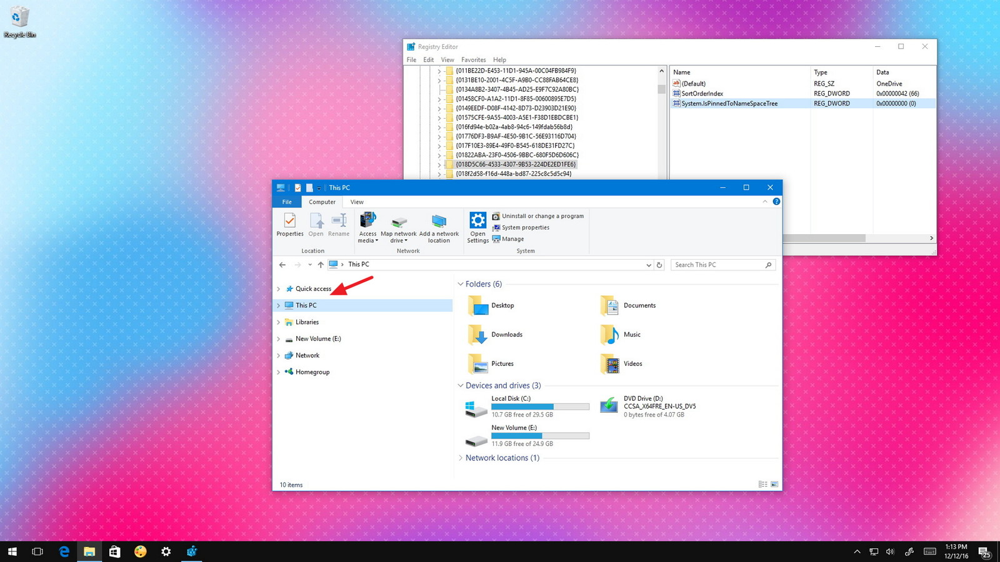
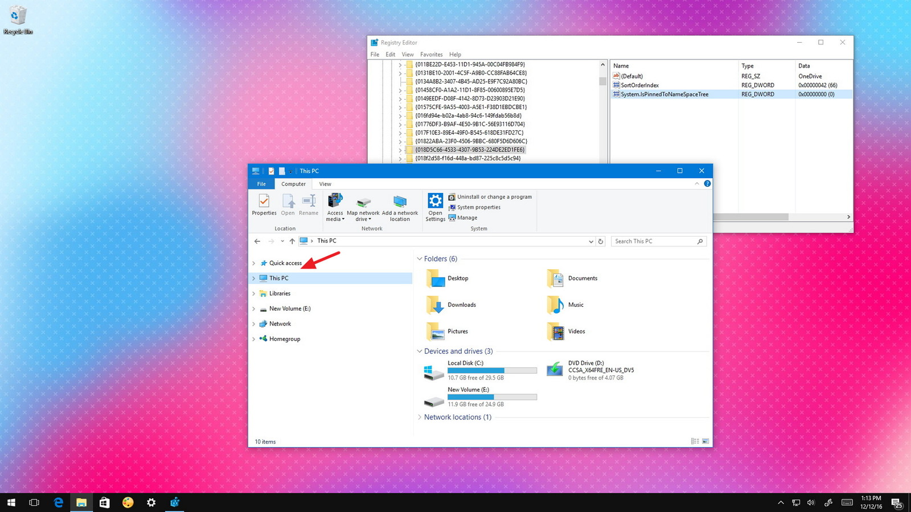
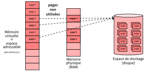
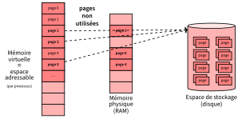
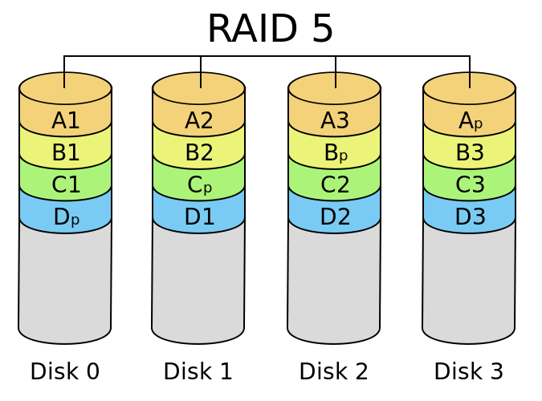

Architecte Solution
Infrastructure
Systèmes d'exploitation et Virtualisation
CentraleSupelec Executive Education - 2024/2025
Idir AIT SADOUNE

-
Docteur en Informatique diplômé par l’ENSMA en 2010.
-
Thèse sur la
modélisation et la vérification des services
par une approche basée sur le raffinement et sur la preuve.
-
Thèse sur la
modélisation et la vérification des services
-
Enseignant au sein du département informatique
de CentraleSupelec - Université Paris-Saclay. -
Chercheur membre des pôles Modèles et Preuve
du LMF - Laboratoire Méthodes Formelles.
Démarche pour aborder ce sujet
-
Connaître les techniques de virtualisation :
- proposées par un OS
- proposées par un hyperviseur
- proposées par les conteneurs
- ...
-
Comprendre leurs fonctionnements, leurs limites
et leurs performances relatives. -
Savoir choisir une technologie de virtualisation en fonction
des usages.
Stades de virtualisation
De la virtualisation au Cloud

Cheminement
- Comprendre ce sujet nécessite une compréhension
- du matériel : CPU, mémoire, stockage, périphériques
- des OS : gestion de processus, gestion mémoire, sécurité
- et du réseau : commutation, routage, encapsulation (non abordé)
-
Comprendre ces sujets est aussi requis pour appréhender le sujet
de la sécurité des systèmes d'information (SSI)
Sources de ces transparents
“Idir Ait-Sadoune, Christophe Jacquet, Thibault Le Meur,
Gianluca Quercini, Nicolas Sabouret, Marc-Antoine Weisser, ...”
L'informatique
- L'informatique est la science du traitement automatique de l'information.
-
Le traitement automatique de l'information s'effectue
avec des programmes informatiques exécutés par des machines
- les programmes (software) décrivent le traitement à réaliser,
- les machines (hardware) exécutent les programmes.

La notion d'ordinateur


- L'ordinateur désigne un équipement
informatique permettant de traiter
des informations en exécutant des instructions.- On lui donne des instructions (programme/logiciel)
- On lui donne des données (information)
- Il transforme les données
ENIAC - 1946
- Construit de 1943 à 1946
par John Mauchley
et John Eckert à l'université de Pennsylvanie - Premier ordinateur entièrement électronique
(utilise des tubes à vide). - Programmé pour résoudre tous
les problèmes calculatoires.

HP 3000 - 1972
- Le mini-ordinateur a été une innovation
des années 1970. - L'intégration de circuits intégrés à grande échelle conduisit au développement des micro-processeurs.

Apple II - 1977
- Un des premiers ordinateurs personnels
à micro-processeur fabriqué à grande échelle - Conçu par
Steve Wozniak,
commercialisé
le 10 juin 1977 par Apple

Les ordinateurs d'aujourd'hui
- System on a Chip
(SOC) : un système complet
embarqué dans une puce (circuit intégré). - Un circuit intégré peut comprendre :
- un ou plusieurs microprocesseurs
- de la mémoire
- des périphériques d'interface
- ou tout autre composant


L'architecture de Von Neumann
- L'architecture de von Neumann :
un modèle pour un ordinateur avec
une mémoire unique pour conserver- les instructions
- et les données

Von Neumann / l'ordinateur moderne

Von Neumann

ENIAC
Ordinateur personnel
source : la thèse d'Alexandre Brunet
Structure générale
d'un ordinateur


L'architecture
d'un microprocesseur
- Le microprocesseur (CPU) exécute
les instructions machines placées
en mémoire centrale. - Le CPU est constitué de quatre parties
- l'unité arithmétique et logique (UAL),
- les registres,
- l'unité de commande,
- le bus de communication interne.
Le microprocesseur
et ses registres
- Registres génériques
- Peuvent contenir des données, adresses mémoire
- Utilisés comme opérandes de calculs, stockage temporaire, ...
-
Registres spécialisés, comme par exemple :
- Program Counter
- Stack Pointer
- Interrupt Description Table
- Page Table Pointer
- ...
Chargement d'un programme
en mémoire
- Un programme est un flux d’instructions.
- Pour être exécutable,
un programme doit être
présent en RAM. - Le registre Program Counter (PC) du CPU indique
l’adresse
de la prochaine instruction à exécuter.
Le fonctionnement
de l'ordinateur


... qu'on allume et qu'on éteint.
Autrefois : ENIAC
-
Premier ordinateur entièrement électronique :
- 18 000 tubes à vide
- 1 500 relais
- 20 registres de 10 chiffres décimaux
- programmé à l'aide de 6 000 commutateurs
-
La programmation se faisait directement
en langage machine - Un seul programme à la fois pouvait s'exécuté.
-
L'absence d'un OS obligeait le programmeur à charger manuellement
le programme
Autrefois : IBM RAMAC 305

- Premier ordinateur à disque dur (l'IBM 350) commercialisé en septembre 1956 par IBM.
-
Composé des éléments suivants :
unité de traitement, imprimante, console, alimentation, disque dur, mémoire 5Mo. - L'unité de traitement est basée sur un tambour magnétique sur lequel est stocké le programme.
-
Un opérateur programme à l'aide de cartes perforées et inscrit les
données sur
le tambour.
Automatiser les tâches
- Comment automatiser les tâches des opérateurs
et des programmeurs ? - Écrire un programme informatique qui:
- décide qui fait quoi et à quel moment
- fait le lien entre les applications et le matériel
Définition
- gère la partie matérielle
- sert de socle pour les applications

Historique/Types des OS
Historique/Types des OS

- Les systèmes batch sont basés sur deux programmes :
- le chargeur : charger les programmes dans la mémoire centrale
depuis
les cartes perforées ou le dérouleur de bandes. - le moniteur d'enchaînement de traitements : permettre
l'enchaînement
des travaux soumis à la place de l'opérateur.
- le chargeur : charger les programmes dans la mémoire centrale
depuis
-
Les systèmes batch automatisent les tâches de préparation
des travaux et exploitent efficacement le processeur.
Historique/Types des OS

Utiliser plusieurs composants en parallèle, ce qui nécessite:
- Gestion de la priorité (quel processus peut accéder à la ressource)
- ordonnancement
-
Mémoire partagée (gérer des informations de plusieurs processus)
- adressage et mémoire
Exemple : MULTICS
Historique/Types des OS
Historique/Types des OS

- Gestion des délais: contrainte de temps de réponse
- les processus doivent répondre vite
- Apparition des micro-ordinateurs
-
Apparition des interfaces graphiques
- Xerox $\rightarrow$ Apple Macintosh 1984, Windows 95, Linux 1991
Historique/Types des OS
- Les ordinateurs communiquent pour échanger des données !
- Arpanet (1967) conçu par la DARPA
- E-mail (1972) avec Ray Tomlinsonn
- TCP/IP(1972)
- Clients-Serveur années 80 $\rightarrow$ NFS - Network File System (Sun, 1984)
- Arpanet ouvert fin 80 $\rightarrow$ Web début 90 (CERN , Tim Berners-Lee)
Historique/Types des OS
- Les ordinateurs de poche existent depuis les années 80
- 1986 : sortie des PDA $\rightarrow$ PalmOS
- 2007 : sortie des smartphones $\rightarrow$ android OS
- 2007 : sortie de l'iPhone $\rightarrow$ iOS
Rôles du système d'exploitation
- L'interface noyau-matériel prend en charge la gestion et le partage des ressources de la machine.
- L'interface noyau-utilisateur construit
une machine virtuelle plus facile d'emploi et plus conviviale. - Le noyau assure plusieurs grandes fonctionnalités.
Interface noyau-matériel
- Gérer l'accès et le partage des ressources matérielles (arbitrage).
- processeur
- mémoire centrale
- périphériques
- ...
- Cet arbitrage doit assurer:
- l'équité d'accès aux ressources
- la protection de l'accès aux ressource
- la cohérence des états des ressources
Interruption - IRQ
- L'OS s'interface avec la couche matérielle, par le biais du
mécanisme
des interruptions (Interrupt ReQuest ou IRQ).- prendre connaissance des événements survenant sur le matérielle
-
L'IRQ est un signal (code) permettant à un dispositif externe
d'interrompre
le processeur pour lancer un traitement particulier.- à chaque code correspond une routine de traitement de l'OS.
- les adresses des routines sont dans une table placée en
mémoire
(la table des vecteurs d'interruptions). - les routines d'interruptions sont chargées
en mémoire au moment du chargement
de l'OS et exécutées en mode superviseur.
Prise en compte d'une IRQ
- Enregistrer $\rightarrow$ pile de l'OS
- l'adresse d'instruction interrompue
- l'état du processeur (registres)
- Passer en mode superviseur
- Charger la routine correspondant
à l'interruption

Interface noyau-utilisateur
- Présenter une interface
entre
le hardware et les applications.- une interface simplifiée et unifiée.
- Présenter au-dessus de la machine physique, une machine virtuelle plus simple et plus conviviale.
- Créer l'illusion de vrais ressources physiques (processeur, mémoire, périphérique ...).
Les appels systèmes
- Fournir une interface d'accès
aux ressources matérielles.- par le biais de fonctions prédéfinies (appels/routines systèmes).
- les points d'entrées aux fonctionnalités
de l'OS.

Exemples d'appels systèmes
- Contrôle de processus
sys_fork : créer un processussys_wait : attendre la terminaison d'un processussys_exit : terminer l'exécution d'un processussys_kill : Envoyer un signal à un processus
-
Gestion des fichiers
sys_open/sys_close : ouvrir/fermer un fichiersys_read/sys_write : lire/écrire des données dans un fichiersys_mkdir/sys_rmdir : créer/supprimer un répertoire
L'appel système fork()

Exemple sous UNIX
-
L'instruction
os.chdir(path) permet de changer le répertoire courant
d'un programme Python en cours d'exécution. -
La commande
cd path permet de changer le répertoire courant depuis
l'interpréteur de commandes (Shell). -
Les deux exécutent la routine système
sys_chdir .
Modes d'exécutions
- Un programme utilisateur s'exécute dans
un mode utilisateur :- un Jeu d'instructions restreint
pour protéger la machine.- ex. manipulation des IRQs interdite.
- un Jeu d'instructions restreint
- L'OS s'exécute dans
un mode privilégié (mode superviseur):- aucune restriction de droits n'existe.

Commutations de contexte
- A l'appel d'une fonction du noyau,
il y a passage au mode superviseur (commutation de contexte). -
A la fin de l'exécution de la fonction
du noyau, le programme repasse
au mode utilisateur.- commutation de contexte avec restauration du contexte utilisateur.
- reprise de l'exécution du programme utilisateur

Les causes de commutations
de contexte
- appelle d'une fonction système.
- exécute une opération illicite
(trappe ou exception). - prise en compte d'une interruption matérielle.

par opposition aux interruptions matérielles.
Interpréteur de commande (shell)
-
Langage de commandes :
l'interface de niveau utilisateur
avec le système d'exploitation. -
Interpréteur de commandes :
exécuter des commandes de l'utilisateur
en appellant la routine système appropriée.

Interpréteur de commande (shell)
- Chaque système d'exploitation a son propre langage
de commandes :- MSDOS/Unix : console + clavier
- Mac/Windows : souris + clavier
- iOS/Android : boutons + écran tactile
 

Noyau d'un système d'exploitation
-
Gestion des entrées/sorties (I/O)
- contrôleurs, pilotes, ...
-
Gestion des processus
- ordonnancement, synchronisation, ...
-
Gestion mémoire
- allocation, gestion des espaces, ...
-
Gestion du stockage secondaire
- système de fichiers, ...
- Gestion de la sécurité
Organisation générale de l'OS
-
Interruptions : évènements produits
par le matériel. -
Exceptions : événements
générés
par le processeur. -
Pilotes (drivers) : applications contrôlant
les périphériques. -
Noyau (kernel) : application rendant
des services généraux. -
Appels Systèmes : demandes
de services.

Structure des OS
- Comment organiser les différentes fonctions d'un OS ?
- Qu'est-ce qui est dans le noyau (en mode Superviseur) ?
- Comment interagissent les différents composants ?
Noyaux monolithiques
- L'ensemble des fonctions/pilotes sont regroupés dans un seul bloc.
-
Ex. anciennes versions de Linux
ou certains vieux Unix. - Les OS monolithiques sont rapides mais délicats à maintenir.
Noyaux monolithiques modulaires
- Seules les parties fondamentales de l'OS sont regroupées dans un bloc unique.
- Les autres fonctions (ex. les pilotes) sont regroupées dans des modules séparés.
- Ex. Linux ou Solaris.
- Les OS monolithiques modulaires ne sont pas faciles à concevoir (dépendances multiples).
Systèmes à micro-noyaux
- Minimiser les fonctionnalités dépendantes
du noyau en plaçant des services l'extérieur. - Éloigner les services « à risque » des parties critiques
de l'OS regroupées dans le noyau. - Ex. Mach de Mac OS X.
- Les OS à micro-noyaux pur sont trop lents.

Systèmes à noyaux hybrides
- Combiner des noyaux monolithiques et des micro-noyaux pour avoir les avantages des deux.
- Ex. XNU de Mac OS X.
composants sont les plus utilisés.
Chargement d'un OS
-
L'OS est le premier programme exécuté lors de la mise en marche
de l'ordinateur, après l'amorçage (boot). - Le boot (boostrap) désigne les étapes successives du démarrage.
Les étapes du boot
- le POST test - Power On Self Test
- après un start ou un reset,
le processeur charge les premières instructions
à partir de la ROM du BIOS situées à l'adresse FFFF0. - des instructions de branchement vers un programme du BIOS
qui initialise et teste les fonctions vitales du hardware
- après un start ou un reset,
le processeur charge les premières instructions
- le chargement du MBR - Master Boot Record
- si le POST réussit, il consultera
la RAM
CMOS pour identifier le disque système
dont le premier secteur est appelé MBR. - le code du MBR teste la table de partition pour
charger la partition contenant
le secteur d'amorçage avec l'IPL - Initial Program Load.- l'IPL charge l'OS ou le bootmanager en RAM.
- l'OS est lancé
- si le POST réussit, il consultera
la RAM
CMOS pour identifier le disque système
Fonctionnalités
principales d'un OS
Gestion des processus
Définitions
- Un programme informatique : une suite statique d'instructions.
- Un processeur : un automate (électronique) de traitement.
- Il peut exécuter un programme
- Il modifie son état en fonction des instructions
- Un processus : un programme exécuté par un processeur.
- capte le caractère dynamique d'un programme.
Programme vs Processus
- Un processus : un programme exécuté par un processeur.
- capte le caractère dynamique d'un programme.
- Un programme peut donner naissance à plusieurs processus.
-
Un processus est forcément créé par un autre processus
(le système d'exploitation par exemple)
- Utilisation d'un logiciel de traitement de texte
- Compilation de code source
- Tâches système (envoi de données vers l'imprimante)
Processus
- Dans un OS moderne, plusieurs processus s'exécutent en parallèle :
- Les processus de l'OS (gestion du réseau, gestion des utilisateurs, ...)
- Le shell (toute l'interface graphique $\rightarrow$ plusieurs processus).
- L'IDE VSCode avec lequel je tape ce cours.
- Le navigateur Chrome qui me permet de visualiser ce cours.
Rôle de l'OS
- Création et suppression de processus
- Programme $\rightarrow$ processus
- Munir le programme des informations nécessaires pour son exécution
- Suspension et reprise
- Multiprogrammation $\rightarrow$ interrompre et reprendre les processus
- Gestion de la mémoire où sont stockées les processus interrompus
- Communication et synchronisation
- Partage de données entre plusieurs processus
- Consistance de l'état de la mémoire
Rôle de l'OS
- Création et suppression de processus
- Programme $\rightarrow$ processus
- Munir le programme des informations nécessaires pour son exécution
- Suspension et reprise
- Multiprogrammation $\rightarrow$ interrompre et reprendre les processus
- Gestion de la mémoire où sont stockées les processus interrompus
- Communication et synchronisation
- Partage de données entre plusieurs processus
- Consistance de l'état de la mémoire
Création de processus
-
Sous UNIX $\rightarrow$ 2 appels système
fork pour créer un processus à partir du processus courant- le processus courant est dupliqué
exec pour remplacer le processus courant par un autre processus
-
Sous WINDOWS
createprocess pour créer un processus (cf.exec Unix)- le processus courant est conservé
L'espace mémoire d'un processus

- Code exécutable en lecture seule
(taille connue) - Variables/Constantes globales
(taille connue) - Pile pour gérer les contextes et les variables temporaires (taille inconnue)
- Le TAS ou la Zone d'allocation dynamique
de mémoire (taille inconnue)
Bloc de contrôle de Processus
- Structure de données contenant les informations relatives à un processus utilisée par l'OS pour la gestion des processus.

- Information mémoire
- Données d'ordonnancement
- Périphériques alloués
- Information d'usage
- État du processus/processeur
Tout ce qui doit être sauvegardé
pour interrompre puis
reprendre l'exécution d'un processus.
Rôle de l'OS
- Création et suppression de processus
- Programme $\rightarrow$ processus
- Munir le programme des informations nécessaires pour son exécution
- Suspension et reprise
- Multiprogrammation $\rightarrow$ interrompre et reprendre les processus
- Gestion de la mémoire où sont stockées les processus interrompus
- Communication et synchronisation
- Partage de données entre plusieurs processus
- Consistance de l'état de la mémoire
Cycle de vie du processus


Suspension de l'exécution
- Le processus en exécution laisse
la main si:- son quantum a expiré $\rightarrow$ Prêt
- crée un processus fils $\rightarrow$ Prêt
- fait une demande d'E/S $\rightarrow$ Bloqué
- exécute
wait $\rightarrow$ Bloqué
Commutation de processus
Rôle de l'OS
- Création et suppression de processus
- Programme $\rightarrow$ processus
- Munir le programme des informations nécessaires pour son exécution
- Suspension et reprise
- Multiprogrammation $\rightarrow$ interrompre et reprendre les processus
- Gestion de la mémoire où sont stockées les processus interrompus
- Communication et synchronisation
- Partage de données entre plusieurs processus
- Consistance de l'état de la mémoire
Actions de l'OS
-
Mémoire: chaque processus a son propre espace mémoire
- pas de problème de consistance mémoire/processeur
-
Verrous: un processus peut verrouiller l'accès à une ressource
- file d'attente pour l'accès à la ressource
-
Outils et Algorithmes de synchronisation
- voir partie Synchronisation des processus
Notion de Thread
- Un thread est l'unité
d'exécution de base d'un processus, décrite
par son point d'exécution et son état interne (registres, pile, ...).- les threads partagent le même code et les mêmes données
- chaque thread a sa propre pile
- un processus peut avoir plusieurs threads
- Un thread partage l'espace mémoire du processus qui l'a créé.
- Un thread est également appelé processus léger.
Notion de Thread

Utilisation des Threads
- Le Thread permet la gestion de plusieurs traitements en parallèle
dans le même processus.- passage de ressources entre threads facilité.
- les variables sont dans le contexte du même processus.
-
Performances améliorées par rapport aux processus :
- création plus rapide;
- changement de contexte plus rapide;
- partage du code $\to$ gain de place en mémoire;
- réactivité $\to$ le processus s'exécute pendant qu'un thread est en attente.
Multiprogrammation
et temps partagé
- Les processus sont répartis sur les ressources :
- Plusieurs processus peuvent vouloir la même ressource en même temps
- File d'attente de PCB
- Choisir un processus parmi tous les processus dans la file d'attente
- Exemple
- le processeur est une ressource hautement critique.
- l'OS est en charge de sa répartition entre les processus
➠ l'ordonnancement (scheduling)
Ordonnancement
-
On ne s'intéresse pas à la durée totale du processus ...
mais au temps pendant lequel il va garder le processeur :- jusqu'à ce qu'il termine
- jusqu'à ce qu'il fasse une E/S
- jusqu'à ce que l'OS décide que ce n'est plus son tour
- Le remplacement d'un processus en exécution a un coût
(commutation de contexte)- exécution de la routine d'ordonnancement
- sauvegarde du contexte (registres + PC)
- chargement d'un nouveau contexte
Objectifs possibles
de l'ordonnancement
- être équitable (fairness) vis-à-vis des processus ;
- maximiser l'utilisation globale du processeur (efficace) ;
- avoir un comportement le plus prévisible possible ;
- permettre un maximum d'utilisateurs interactifs (réactif) ;
- minimiser le surcoût (overhead) lier à la parallélisation ;
- assurer une utilisation maximale des ressources ;
- gérer convenablement les priorités.
qui minimise ou maximise un critère.
Ordonnancement
préemptif vs non préemptif
- Ordonnancement non préemptif $\to$ après avoir donné le
contrôle
à un processus, l'OS ne peut pas l'interrompre- sauf si en attente d'une ressource
-
Ordonnancement préemptif (avec réquisition) $\to$ l'OS peut interrompre
un processus si :- le quantum (le temps d'utilisation maximum consécutif) est atteint
- un processus plus prioritaire demande d'utiliser le processeur
-
L'ordonnancement préemptif est indispensable pour gérer
des systèmes temps réel ou des systèmes interactifs.
Ordonnancement
non préemptif

Ordonnancement
préemptif
De nombreuses stratégies
d'Ordonnancement préemptif
- FIFO sans préemption
- Plus court d'abord
- Round-Robin (FIFO préemptif)
- Files de priorités
- Files de priorités dynamiques
Exemple
Solaris
OS des machines Sun entre 1993 et 2000
Principe
- Quantum de temps selon priorité (0 = priorité max)
- Priorité modifiée à la fin du quantum ou après une E/S
- prioritaire $\rightarrow$ grand quantum
- quantum consommé $\rightarrow$ priorité augmentée
- E/S $\rightarrow$ priorité diminuée
Exemple
Windows XP et après
Principe
- Priorité + Round Robin
- gérée au niveau des threads uniquement
- 32 niveaux de priorité
- ordonnancement préemptif par niveau de priorité
-
Priorité dynamique
- baissée à la fin du quantum
- remontée après chaque E/S $\rightarrow$ interface graphique plus réactive!
Exemple
Linux, MacOS X
Principe
- 2 algorithmes:
- Tâches temps réel $\to$ préemptif selon priorité, FIFO ou RR par priorité
- Autres tâches $\to$ temps partagé équitable
-
Système de crédits
- chaque processus dispose d'un crédit = sa priorité
- le processus le plus riche l'emporte (préemptif)
- perte de 1 crédit à la fin du quantum
- si aucun processus prêt n'a de crédit, tous les processus sont re-crédités
$\to$ $credit^{'}$ $=$ $credit/2$ $+$ $credit_{init}$
Inter Process Communication - IPC
-
L'OS garantie l'indépendance des processus
- par l'ordonnanceur CPU
- par la gestion mémoire que l'on verra plus tard
-
Un processus peut communiquer avec un autre processus
ou avec des périphériques (fichiers, imprimantes, réseaux, ...). -
Il est alors nécessaire de mettre en oeuvre un
mécanisme
de communication inter-processus.
Principales méthodes
de communications
| Méthode | Description |
|---|---|
| Signal | Un message système est envoyé d'un processus à un autre. |
| Pipe | Un canal unidirectionnel ; les données émises sont accumulées dans une mémoire tampon (FIFO). |
| File | Lecture/Écriture dans un fichier. |
| Socket | Un flux de données envoyé à travers une interface réseau à un autre processus. |
| Mémoire Partagée | Espace de mémoire alloué à plusieurs processus. |
| Moniteur/Sémaphore | Une structure de synchronisation pour les processus travaillant sur des ressources partagées. |
Problème de la concurrence
Exemple
Soit la gestion d'un compte bancaire
- Une variable partagée
balance - Une fonction
add(1) (balance = balance + 1 ) - Une fonction
sub(1) (balance = balance - 1 ) - Le montant initial du compte est de
9€
Problème de la concurrence
Exemple
On lance 2 threads en parallèle
- La première thread exécute
10 000 000 foisadd(1) - La deuxième thread soustrait
10 000 000 foissub(1)
-
Résultat attendu $\to$
balance = 9€
-
Résultat obtenu $\to$
balance = -98599€
Problème de la concurrence
- les entrelacements se font au niveau du code binaire
- couper entre chaque instruction assembleur


Problème de la concurrence
Conclusion
alors qu'on s'attend à
Problème de la concurrence
Conclusion
Situation de compétition
- erreur dépendant de l'enchaînement temporel d'événements
impliquant une ressource partagée - non déterministe
- difficile à détecter (tests)
- difficile à corriger (debug)
Section critique
Lorsqu'il y a des variables partagées,
il existe des portions
de code qu'on ne veut pas pouvoir interrompre.
- des zones du code qui manipulent des ressources partagées
- ces zones sont appelées sections critiques
Exclusion mutuelle
-
Lorsqu'on déclare une section critique,
on doit garantir
qu'au plus un seul processus/thread est dans la section critique.- besoin de gérer l'exclusion mutuelle des sections critiques.
- une seule section critique peut être exécutée à la fois.
- Pour résoudre ce problème il faut un système de verrou.
Les propriétés à respecter
-
Exclusion mutuelle $\to$
si une thread effectue sa section critique,
alors aucune autre thread ne peut entrer en section critique. -
Déroulement $\to$
une thread, qui souhaite entrer en section critique,
ne peut pas décider qui doit rentrer en section critique. -
Vivacité $\to$
une thread, qui souhaite entrer en section critique,
y rentre en temps borné.
Systèmes de verrou
-
Processeur non-parallélisé (mono-Processeur, mono-Thread)
- masquer les interruptions pendant la section critique
- empêche la préemption
-
Processeur parallélisé
- coopération Hardware/Logiciel (quelques instructions atomiques)
- des mécanismes de haut niveau de l'OS (moniteurs, sémaphores, ...)
Moniteur
Un moniteur est un module constitué de:
- objets inaccessibles de l'extérieur
- fonctions manipulant l'objet en exclusion mutuelle
Moniteurs en Java
-
Dans la JVM de Java,
on peut déclarer que des blocs de code
sont en exclusion mutuelle.- utilisation du mot clé
synchronized $\to$ un verrou (lock) sur un objet - une seule thread dans les blocs
synchronized sur le même objet
- utilisation du mot clé
-
Une thread, qui possède un verrou, peut exécuter
n'importe quelle
méthode, vérouillée ou non (verrou récursif). -
Une thread peut verrouiller plusieurs objets, ceci peut provoquer
une situation d'interblocage. -
Tout bloc non
synchronized (non vérouillé) peut être appelé
par n'importe qui n'importe quand.
Moniteurs en Java
Exemple
Sémaphore - Dijkstra - 1962
- Un sémaphore définit un objet partagé
- qu'on peut acquérir;
- qui met en attente ceux qui le demandent;
- qui donne la main dans l'ordre des demandes.
-
Toutes les threads en concurrence sur une ressource partagent
un même sémaphore- on acquiert le sémaphore avant d'entrer en SC;
- on relâche le sémaphore en sortant de la SC.
Implémentation du Sémaphore
Utilisation du Sémaphore
Les propriétés d'un sémaphore
- Vivacité : on veut passer la main dans le bon ordre
- utilisation d'une file d'attente des PCB
-
Les fonctions
acquire etrelease doivent être atomiques !- elles sont elles-même des SC pour le sémaphore ...
Les sémaphores
Exemple
Gestion de la mémoire
La mémoire pour qui et pour quoi ?
Pour le système d'exploitation
-
Au lancement d'une machine, l'OS est le premier programme
chargé en mémoire - L'OS aussi a besoin d'espace mémoire
- le code de son Noyau
- la table des interruptions
- la table des processus
- des structures de données (PCBs et autres )
- ...
La mémoire pour qui et pour quoi ?
Pour les processus
- A la création d'un processus, l'OS crée
un PCB et alloue
de la mémoire pour le processus. - Pour des raisons de sécurité, chaque processus doit utiliser
une zone mémoire distincte (un espace d'adresses).- quel mécanisme d'allocation de cet espace ?
- comment assurer la protection de cette zone ?
- comment assurer la transparence de cet espace ?
Espace de stockage
- Ensemble ordonné de cases indexée par leur adresse
(numéro de la case) et contenant:- des instructions $\rightarrow$ registre PC dans le processeur
- des données $\rightarrow$ registre RADM dans le processeur


D'où viennent les programmes?
Le programme (code + données) est chargé depuis le disque
vers la mémoire
... il est placé à un endroit donné dans la mémoire
quelles sont les adresses des variables en mémoire ?
Programme vs processus
Adresses symboliques vs Adresses mémoires
Lors de la création de processus, l'OS instancie le programme.
- transformer les noms des variables en adresses.
Méthodes de liaison d'adresses
-
À la compilation $\to$ on connaît les adresses
des instructions
et de toutes les données- adresses utilisées à l'intérieur d'un programme
- adresses relatives au début du programme
-
Au chargement $\to$ la taille du processus est fixée
- adresses virtuelles (logiques): adresses utilisées dans le programme
- adresses physiques: adresses utilisées dans la RAM
- nécessite un composant de translation dans l'UC
(Memory Management Unit - MMU)
-
À l'exécution $\to$ le processus a besoin de plus de place
- déplacer le processus + réédition de lien
Résolution d'adresse
Memory Management Unit - MMU
Stratégies d'allocation
de mémoire
- Il faut choisir une stratégie pour allouer et libérer la
mémoire
en fonction des besoins des processus. -
Deux stratégies possibles:
- Allocation contiguë de cases mémoire (par partition)
- Allocation non contiguë (par pagination)
Allocation par partition
Les processus constituent un seul bloc non décomposable

- des trous apparaissent $\to$ fragmentation
- les gros processus ne peuvent pas rentrer $\to$ défragmenter
- réduire la fragmentation
- limiter les opérations de défragmentation
Allocation par partition
Stratégies d'allocation $\to$ choisir dans quelle zone libre placer un processus
- First Fit: premier bloc libre
- Best Fit: plus petit bloc libre
- Worst Fit: plus grand bloc libre
Allocation par pagination
- Découper la mémoire physique en blocs de taille $T_c$ constante, appelés
cadres de pages - Découper l'espace mémoire utilisé par un processus (espace logique)
en paquets de $x$ pages de taille $T_c$- chaque page a la même taille qu'un bloc
- Placer les pages dans les cadres


Allocation par pagination
-
Allocation mémoire
- un processus est dans des zones disjointes
- pas besoin de défragmenter
-
Adaptation:
- besoin de plus de mémoire $\to$ rajouter des pages
- pas besoin de le ré-allouer entièrement
-
Mémoire virtuelle: charger uniquement les pages
dont le processus a besoin.
Allocation par pagination
Adressage
Déterminer l'adresse physique à partir de l'adresse logique
Allocation par pagination
Adressage
Déterminer l'adresse physique à partir de l'adresse logique
-
Adresse logique
- Numéro de page ($n$ bits) + décalage ($m$ bits)
-
Chaque processus maintient une liste:
- numéro de page $\to$ numéro de cadre
- c'est la table des pages
Allocation par pagination
Résolution d'adresse
Allocation par pagination
Résolution d'adresse
-
En pratique, géré au niveau matériel $\to$ la MMU
- L'OS charge la table des pages du processus dans la MMU
- Pas de calcul d'adresse au niveau de l'OS
-
Allocation des cadres: ne pas allouer le même cadre à deux processus différents
- L'OS doit savoir quel processus utilise quel cadre
- Table des cadres de page libres
| num. cadre | num. proc. | libre |
|---|---|---|
| 0 | 42 | 1 |
| 1 | 37 | 1 |
| 2 | - | 0 |
| $\ldots$ | $\ldots$ | $\ldots$ |
Gestion de l'espace d'adressage
-
Trop de pages (ex: $n=20$, $m=12$)
- Grande table des pages $\to$ place mémoire perdue
- $2^{20}$ lignes de $20$ bits $\approx$ $2.5$ Mo par processus
- Allocation et commutation plus coûteuse en temps
-
Pages trop grosses (ex: $n=10$, $m=22$)
- Fragmentation = $2^{m-1}$ $\to$ place mémoire perdue
- $2^{21}$ octets $\approx$ $2$ Mo par processus
- Pas gérable au niveau du MMU
Pagination hiérarchique
2 niveaux (ou plus)
- ne charger que les tables utiles
- réduire l'espace mémoire utilisé par le système d'adressage
- réduire la fragmentation due aux pages
Pagination à deux niveaux
Pagination à deux niveaux
Exemple
- Adresses sur $32$ bits et cadres de $4$ Ko $\to$ $m=12$
-
Pagination à $1$ niveau ($n=20$, $m=12$)
- Table des pages = $2^n$ lignes de $n$ bits
- Total = $2^{20} \times 20 \approx$ $2.5$ Mo par processus
-
Pagination à $2$ niveaux ($n_1=10$, $n_2=10$, $m=12$)
- Répertoire = $2^{10}$ lignes de $32$ bits $\approx$ 4 Ko
- 1 table de pages = $2^{10}$ lignes de $20$ bits $\approx$ $2.5$ Ko
- Total = entre $6.5$ Ko et $2.5$ Mo par processus
Mémoire virtuelle
État de la mémoire
-
Nombre et taille des processus:
- Entre $200$ et $500$ processus en parallèle sur un PC
- Gros processus: Eclipse = $250$ Mo, données d'un jeu $\geq$ $1$ Go
- Somme des tailles des processus $\geq$ Capacité RAM
-
Portions de code inutilisées
- Traitement d'erreur $\rightarrow$ rarement utilisé
- Données (tableau, jeu, ...) $\rightarrow$ pas tout en même temps
- Bibliothèque $\rightarrow$ très variable!
- ne charger que les pages utiles!
- laisser le reste sur le disque
Mémoire virtuelle
-
Extension des mécanismes de pagination
- la mémoire paginée peut représenter des espaces
non présents en RAM (ex. disque) $\to$ mémoire virtuelle - les pages sont soit en RAM, soit en mémoire
auxiliaire
(swap) $\to$ la RAM est un cache
- la mémoire paginée peut représenter des espaces
-
Chaque ligne de la table des pages contient:
- un bit de la validité qui indique si la page est en RAM
- l'adresse correspondante en RAM (numéro du bloc)
- sinon une information pour la trouver sur le disque
Schéma de principe
Chaque processus peut adresser plus d'espace
qu'il n'a effectivement en mémoire physique
 

Schéma de principe
Chaque processus peut adresser plus d'espace
qu'il n'a effectivement en mémoire physique
-
Accès à une page non présente en RAM :
- levée d'une exception CPU Page-Fault
- processus courant bloqué et chargement de la page en RAM
-
Avantages
- masquer la taille de la RAM
- possibilité de mettre plus de processus en parallèles
- affecter plusieurs adresses virtuelles à une adresse physique
- une pagination à la demande
Pagination à la demande

Remplacement des pages
- Chaque processus dispose d'un nombre de cadres limité
- selon la politique d'allocation
- libérer un cadre lorsqu'on a besoin d'une nouvelle page
- Temps d'exécution proportionnel au nombre de défaut de page
- réduire le nombre de défauts de page
- Quelle stratégie pour choisir les pages à supprimer de la RAM ?
Remplacement des pages
- Algorithme First In, First Out (FIFO)
- retirer les pages les plus anciennes
- seconde chance
-
Algorithmes basés sur l'utilisation des pages
- la page la moins utilisée (Least Frequently Used)
- une page pas récemment utilisée (Not Recently Used)
- la page la moins récemment utilisée (Least Recently Used)
Définir une fonction qui, étant donné l'état actuel (occupation
des cadres par des pages), décide quel cadre doit être libéré.
Limites de la mémoire paginée
-
Découpage des processus - Taille arbitraire ($2^{nb\_bits\_cadre}$)
(peut couper une portion de code, un bloc de données ...) - Fragmentation résiduelle
- Taille arbitraire ($2^{nb\_bits\_cadre}$)
-
Chargement d'une page - Plein de données inutiles
- Pas forcément tout ce dont on a besoin
- Idée $\to$ mémoire segmentée
(non traitée dans ce cours)
- Découper en tenant compte de la structure du processus
(code + données)
- Découper en tenant compte de la structure du processus
Système de fichiers
Le stockage secondaire
- Le stockage secondaire conserve des programmes et des données.
-
L'OS masque la complexité et la diversité des unités de stockage
(matériel, système de fichiers, ...) grâce à:-
Une vue logique des données :
- fichiers: unité de stockage logique
- répertoires: classement arborescent
- volumes montés: vue globale des systèmes de fichiers
-
Une organisation physique des espaces de stockage :
- découpage en blocs
- affectation et libération de blocs
-
Un système d'entrées/sorties (
non traité dans ce cours ) :- gestion du caches, algorithmes d'optimisation des accès,
- pilotes gérant les communications avec les périphériques
-
Une vue logique des données :
La notion de fichier
-
Fichier
- une collection nommée d'information accessibles via un périphérique.
-
Unité logique
- indépendante du support physique (périphérique)
- abstraction des propriétés physiques
-
Type de fichier
- code source, données, bibliothèque, exécutable, ...
- généralement indiqué par son extension
- un type de fichier $\to$ une structure spécifique
File Control Block - FCB
à la gestion des fichiers
| Nom | indépendant de l'OS, lisible |
| Identifiant | numérique, unique, pour l'OS |
| Type | extension ou en-tête de fichier |
| Emplacement | pointeur sur un périphérique |
| Taille | en octets ou en blocs |
| Protection | lecture, écriture, exécution ... |
| Date(s) | création, modification, accès ... |
| Utilisateur | propriétaire du fichier |
| ... |
Protection
-
Partage de fichiers
- rendre accessible à un utilisateur B un fichier de l'utilisateur A.
-
Politique de protection
-
définir qui peut accéder à quel(s) fichier(s)
- identifiant utilisateur $\to$ identifiant processus
- contrôle d'accès dans le FCB
-
spécifier pour chaque fichier la liste des sujets autorisés à effectuer
un type d'accès
-
définir qui peut accéder à quel(s) fichier(s)
Techniques de protection
- Liste de contrôle d'accès (ACL)
- utilisateur $\to$ droits
- l'ensemble des utilisateurs doit être connu a priori
- taille du FCB grossit avec le nombre d'utilisateurs
-
Mot de passe
- 1 mot de passe par fichier $\times$ type d'accès (
r ,w , ...)
- 1 mot de passe par fichier $\times$ type d'accès (
- pas très pratique $\to$ peu utilisé
-
Classes d'utilisateurs
- Exemple: Propriétaires vs Autres
Techniques de protection
-
Notion de groupe
-
Ensemble de groupes définis a priori
- Ex:
admin ,dev-disque ,user-disque ,dev-ram ,user-ram
- Ex:
-
FCB: 1 utilisateur + 1 groupe (propriétaires)
- Ex:
toto.c ,u=batman ,g=dev-disque
- Ex:
-
Utilisateur $\to$ liste de groupes
- Ex:
robin ,g=[user-disque,dev-ram]
- Ex:
robin n'a pas accès àtoto.c
-
Ensemble de groupes définis a priori
-
Dans les systèmes POSIX on distingue :
- 3 modes (lecture, écriture, exécution)
- 3 catégories de sujets (le propriétaire, son groupe et le reste des sujets)
Techniques de protection
-
Dans les systèmes POSIX on distingue :
- 3 modes (lecture, écriture, exécution)
- 3 catégories de sujets (le propriétaire, son groupe et le reste des sujets)
-
Exemple $\to$ Unix
- 3 $\times$ 3 bits par fichier
Opérations sur un fichier
-
Appels systèmes de base
- Création: allocation espace + entrée répertoire
- Lecture: pointeur de lecture
- Écriture: pointeur d'écriture
- Repositionnement: déplacer un pointeur
- Suppression: retrait de l'entrée dans le répertoire
- Troncature: vider mais garder l'entrée
-
Opérations composées
- Ex: copie, renommage
- effectuées à partir des appels systèmes de base
Ouverture de fichier
-
Problème
- Nécessité d'accéder au FCB à chaque opération sur le fichier
- Le FCB est stocké dans le répertoire du périphérique
- Très coûteux en accès disque (donc en temps)!
-
Solution
- L'appel système
open permet de charger le FCB en mémoire. - L'OS impose que tout accès à un fichier soit précédé d'une ouverture.
Table des fichiers ouverts
-
La table des fichiers ouverts de l'OS contient l'ensemble
des FCB des fichiers ouverts.- ouverture $\to$ chargement du FCB + ajout dans la table
- fermeture $\to$ retrait de la table
- les FCB sont chargés en RAM
- pas d'impact sur le fichier!
-
Gestion par l'OS
- implicite $\to$
open implicite au premier accès - explicite $\to$
exception si le fichier n'a pas été ouvert avant - une table de fichiers ouverts globale avec compteurs
- une table par processus $\to$ fermeture à la terminaison
- implicite $\to$
- possibilité d'interdire l'accès aux autres processus
Table des fichiers ouverts
Notion de répertoire
-
Le répertoire est la structure de stockage des informations
des fichiers
(les FCB) dans les supports de stockage.- entrée du répertoire $=$ identifiant du fichier et/ou nom du fichier
- contenu du répertoire $=$ FCB des fichiers
- L'OS récupère les informations sur les fichiers dans le répertoire
Structure des disques
- Disque $\to$ Structure physique
-
Partition $\to$ Structure logique (disque "virtuel)
- Base : 1 disque = 1 partition
- 1 disque = N partitions
- 1 partition = 1 ou N disques (selon OS)
-
Répertoire $\to$ Un répertoire par partition $\to$ l'ensemble des FCB
- Nom/identifiant $\to$ FCB
Structure à 1 niveau

-
Nom $\to$ FCB
- Exemple: MSDOS et Windows $\to$ 11 octets (8 nom + 3 extension)
- Exemple: Unix et Mac $\to$ 255 octets
- Taille du répertoire proportionnelle au nombre de fichiers
- borner le nombre de fichiers $\ldots$
- Utilisateur: organiser les fichiers, unicité de nom, $\ldots$
Structure à 2 niveaux

-
Un répertoire par utilisateur
- Identifiant + Nom $\to$ FCB
-
Répertoire des utilisateurs: Master File Directory (MFD)
- Identifiant $\to$ User File Directory
-
Répertoire par utilisateur: User File Directory (UFD)
- Nom $\to$ FCB
Structure à 2 niveaux
- Pas beaucoup plus coûteux en taille
- Utilisateur: organiser les fichiers, unicité de nom, $\ldots$
- Taille des répertoires proportionnelle au nombre de fichiers
- Partage de fichiers
Structure arborescente

-
Généralisation de la structure à 2 niveaux:
- Répertoire racine $\to$ Master File Directory (MFD)
- Sous-répertoires, pouvant à leur tour jouer le rôle de MFD
Structure arborescente
-
Fichiers
- Bit "répertoire" dans le FCB
- Nom unique = chemin depuis la racine (chemin absolu)
-
OS $\to$ Répertoire courant (par processus)
- Recherche à partir du répertoire courant (chemin relatif)
- Recherche par défaut (PATH)
Structure en graphe
-
Généralisation de l'arbre avec des liens
- Graphe acyclique
-
Liens: référencer un fichier décrit dans un autre répertoire
- bit "lien" dans le répertoire + chemin absolu
-
Extension: duplication
- FCB recopié $\to$ copie et original indiscernables
- Compteur de liens (pour libérer l'espace sur le support physique)
Structure en graphe
Techniques de protection
-
Dans les systèmes POSIX on distingue :
- 3 modes (lecture, écriture, exécution)
- 3 catégories de sujets (le propriétaire, son groupe et le reste des sujets)
| Mode | Lecture (r) | Écriture (w) | Exécution (x) |
|---|---|---|---|
| Fichier | mode lecture | mode écriture | exécution du fichier |
| Répertoire | lister le contenu | créer, renommer et supprimer un fichier |
acceder au répertoire et à son contenu |
Notion de système de fichier
-
Comment stocker les informations (données et code) sur le disque
- Comment les organiser ?
- Comment y accéder ?
-
Différence avec la RAM
- Grande quantité de données
- Accès lent (rapport $10^3$ à $10^6$)
- Définir une norme de gestion
- Organisation de l'ensemble des données et des périphériques
- Exemple: Linux $\to$ chaque périphérique est représenté par un fichier
La vue logique
-
Un système de fichiers est un ensemble
de structures de données
et de fonctions qui permettent à un OS de manipuler des fichiers.
- Du point de vue de l'OS, le FS doit rendre des services qui ne
dépendent
pas de son implémentation (indépendant du support physique). -
Il doit répondre à des problèmes comme :
- la diversités des supports de stockage ;
- la sécurisation des données.
La vue physique
-
Les supports de stockage sont décomposés en blocs
(les éléments atomiques du FS). - Selon les technologies, la création des blocs et émule toujours celle des disques durs.
-
Le formatage de bas niveau :
- décomposer en secteurs (cylindre, piste et secteur de la piste)
- regrouper les secteurs en blocs.
Structure d'un système de fichiers
-
Système logique
- Structure de répertoires
- FCB + gestion de la protection
-
Système physique
- Fichiers $\to$ ensemble de blocs logiques
- Bloc logique $\to$ blocs physique
- Identification des blocs physiques selon support
-
Lien $\to$ pilote de périphérique
- Appel système (ex: chargement bloc 456) $\to$ instruction matériel
Montage de répertoire
-
Le système de fichiers $\ldots$
- $\ldots$ associe des noms à des blocs logiques (fichiers)
- $\ldots$ associe des noms à des répertoires venus du disque!
-
Montage de répertoire
-
Le montage consiste à positionner un répertoire dans le FS
- Chargement du FCB par l'OS (disque $\to$ RAM)
- Attribué à l'utilisateur du processus
- Association dans le MFD au niveau logique
- Les fichiers deviennent accessibles
-
Le montage consiste à positionner un répertoire dans le FS
Accès à un fichier


Allocation
- Choix des blocs physiques pour 1 fichier donné
-
3 méthodes possibles
- Allocation contiguë
- Allocation chaînée
- Allocation indexée
Schéma combiné
ex: Linux extfs
- Combiner allocation chaînée et allocation indexée
- Index = $k$ premiers blocs du fichier + ($n-k$) blocs d'indirection
- Moins de perte pour les petits fichiers
- Accès rapide

File Allocation Table (FAT)
- Utilisé sous MSDOS (Intel) et OS/2 (IBM)
- Allocation indexée
- Liste chaînée des index des blocs en début de chaque partition


File Allocation Table (FAT)
-
Avantages - FCB $\to$ adresse premier bloc = premier index
- Pas de fragmentation (allocation indexée)
- Allocation bloc simple
- Accès rapide (FAT chargée en cache puis accès direct disque)
-
Inconvénients - Fiabilité: FAT perdue $\rightarrow$ disque foutu!
$\rightarrow$ doubler la FAT (sur 2 blocs distincts)
- Fiabilité: FAT perdue $\rightarrow$ disque foutu!
Autres services des FS
- Journalisation
- Actions d’écritures par transaction (commit/rollback en cas de problème)
- Exemple : NTFS, ext4
- Chiffrement
- Exemple : Windows Encrypted FileSystem (EFS)
- Exemple : Linux ext4, DM-Crypt LUKS (bas niveau)
- Compression
- Exemple : ZFS, BrtFS, NTFS
Autres services des FS
- Déduplication
- Exemple : BrtFS, SDFS, ZFS
Autres services des FS
- Clichés instantanés (snapshots)
- Technologie de Copy-On-Write
- Exemple : NTFS (Volume Shadow Copy), Linux LVM
- Extension : gestion de versions (snapshots continus)
- Exemple : ext3cow, tux3, NILFS
Volume Logique
La gestion par volume logique (LVM) est une méthode d’allocation d’espace disque plus flexible que le partitionnement classique.
- regroupés en groupe de volumes équivalent à des pseudo disques durs.
- découpé en volume logique qui seront formatés et montés dans le FS.
- une manière de virtualiser le stockage
qui permet beaucoup de flexibilité :
- redimensionnement
- tolérance aux pannes
Volume Logique
(RAID)

- Le RAID est un ensemble de techniques
de virtualisation permettant de répartir
des données sur plusieurs disques durs - Le RAID permet d'améliorer :
- les performances,
- la sécurité
- la tolérance aux pannes
Les systèmes de fichier
en réseau
- Présentent des ressources de stockage réparties
sur un réseau. - Masquent les FS sous-jacent
(Ex. : NFS de Unix, CIFS de Microsoft) - Les nouvelles versions sont orientées Cluster/Cloud
(Ex. : Ceph, GlusterFS, GoogleFS/HadoopFS, RozoFS)
Sécurité
Sécurité inhérente à l’OS
- Seul l’OS peut exécuter des instructions privilégiées
(mode Superviseur du CPU)- Ex. : instructions de bas niveau (lecture/écritures de périphériques)
- Les espaces mémoires de chaque processus et du
noyau sont isolés
(pagination, segmentation) - Un processus monopolisant le CPU ne bloque pas le
système
- Timer matériel déclenchant la préemption du CPU
Autres mécanismes
- OS multiutilisateurs
- plusieurs identités
- les processus appartiennent à une identité
- Privilèges
- des comptes avec des privilèges différents sur le système
- root, administrator, ...
- des processus privilégiés avec des niveaux de
privilèges granulaires
- capabilities sous Linux par exemple
- des comptes avec des privilèges différents sur le système
- Droits sur des objets (DAC)
- possibilité de positionner des droits sur les fichiers
OS et virtualisation
en utilisant différentes stratégies :
- Multiplexer une ressource (partager son utilisation).
- CPU en temps partagé.
- Emuler une ressource (créer une ressource purement logicielle).
- Mémoire virtuelle swappée.
- Agréger plusieurs ressources pour n’en présenter qu’une.
- arborescence du Virtual FileSystem et Volumes logiques
Avant la virtualisation
- Un gros serveur portant de nombreuses applications
- problèmes de dépendances sur des librairies
- problèmes de maintenance
$\to$ impact d’une opération d’un service sur un autre
solution $\to$ limiter les dépendances entre applications
- Un serveur par application
- Bonne isolation,
- mais quel gâchis (HDD, RAM, CPU) !
solution $\to$ consolidation de serveur
Niveaux de virtualisation
Les machines virtuelles
(émulation)
Les Machines Virtuelles
-
un environnement qui fonctionne comme un ordinateur virtuel
avec ses propres ressources (processeur, mémoire, disque, ...)
- une ou plusieurs applications.
- un système d'exploitation.
- un ensemble de périphériques virtuels.
Les Hyperviseurs
Un hyperviseur est un composant logiciel
qui gère les interactions
entre les machines virtuelles
et le matériel sous-jacent.
Le rôle des Hyperviseurs
- Autorisez les VM à partager les mêmes ressources physiques.
- Présentez à chaque VM une fraction des ressources physiques.
- Répond aux demandes des VM invitées.
Comment le CPU est virtualisé
L'hyperviseur planifie des tranches de temps sur la CPU physique
pour exécuter
les instructions des CPU virtuelles.
Comment le CPU est virtualisé
- Les serveurs $\to$ plusieurs processeurs avec plusieurs cœurs.
- Chaque VM peut avoir plusieurs vCPU.
- L'hyperviseur ne mappe pas statiquement vCPU à un cœur.
- une VM ne peut pas avoir plus de vCPU que le nombre total de cœurs physiques.
- le nombre de vCPU sur toutes les VM peut dépasser le nombre de cœurs physiques.
Les types de Hyperviseurs
- Type 1 $\to$ s'exécute sur le matériel hôte (Microsoft Hyper-V)
- Type 2 $\to$ s'exécute en tant qu'application sur l'OS hôte (VirtualBox)
Les avantages des VMs
- ✔ Plusieurs serveurs virtuels dans un serveur physique.
- meilleure utilisation des ressources.
- coûts inférieurs.
- gestion simplifiée du data-center.
- ✔ Création facile de VMs à partir de modèles/clones.
- un serveur virtuel peut être opérationnel en quelques minutes/heures.
- un serveur physique peut avoir besoin de semaines.
- un serveur virtuel peut être opérationnel en quelques minutes/heures.
- ✔ Migration facile des VMs.
- temps d'arrêt réduits ou minimisés.
Les conteneurs
Pourquoi la conteneurisation ?
à utiliser « un bateau gigantesque pour transporter un camion chargé de bananes ».
- Machines virtuelles
- une bonne solution pour packager un microservice.
- le microservice est intégré à la machine virtuelle.
- déploiement facile sur n'importe quelle machine.
- ... cependant, les VMs sont lourdes :
- elles contiennent un OS complet.
- le démarrage ou la migration d'une VM peut prendre du temps.
Pourquoi la conteneurisation ?
- Chaque application est livrée avec un "package différent".
- Déploiement dépend de l'application.
- Gestion de dépendance difficile en production.
- Les conteneurs standardisent le développement et le déploiement.
- Une excellente solution dans un environnement cloud.
C'est quoi un conteneur ?
VM vs conteneur
Docker
- Une plate-forme ouverte pour le développement, la livraison
et l'exécution d'applications. - Il offre la possibilité de packager et d'exécuter
une application
dans un environnement isolé appelé conteneur
Docker
- Docker crée et exécute un conteneur à partir d'une image.
- Image $\to$ modèle en lecture seule avec des instructions
pour créer et exécuter un conteneur. - Image contient tous les fichiers nécessaires pour exécuter
une application dans un conteneur.
Applications cloud native
Applications traditionnelles
- Les applications traditionnelles ont une architecture monolithique.
- Toute la logique métier est intégrée dans une seule application.
Les inconvénients
- Le code est difficile à maintenir.
- La base de données est difficile à maintenir.
- Chaque modification entraîne le déploiement de l'ensemble
de l'application. - Une erreur dans un module affecte l'ensemble de l'application.
- Difficile d'adhérer aux pratiques DevOps.
- DevOps : modularité, livraison, déploiement continus, isolation des pannes ...
Architectures microservices
- Application : microservices faiblement couplés
- Chaque microservice est un processus indépendant.
Les avantages
- Respect des principes DevOps.
- Différents microservices, différentes technologies.
- Microservices évoluent indépendamment les uns des autres.
- BDD décentralisées :
technologie de BDD personnalisée pour chaque microservice. - Bon choix architectural pour une application cloud native.
Déployer des microservices
- Sans virtualisation
- plusieurs instances de service par hôte.
- chaque hôte physique exécute plusieurs instances de service.
- une seule instance de service par hôte.
- chaque hôte physique exécute une seule instance de service.
- plusieurs instances de service par hôte.
- Avec virtualisation
-
une seule instance de service par machine virtuelle (VM).
- un service s'exécute dans une machine virtuelle.
-
une seule instance de service par conteneur.
- un service s'exécute dans un conteneur.
- de nombreuses VM/conteneurs s'exécutent sur le même hôte physique.
-
une seule instance de service par machine virtuelle (VM).
Plusieurs instances par hôte
- Utilisation efficace des ressources.
- Isolement limité des instances de service.
- Difficile de limiter les ressources qu'un service utilise.
- Déploiement difficile :
les services sont écrits dans différents langages et frameworks.
Instance de service par hôte
- Isolement entre les instances de service.
- Monitoring facile des ressources utilisées par un service.
- Déploiement facile :
pas d'exigences contradictoires entre deux prestations de service. - Utilisation inefficace des ressources :
toutes les ressources d'un hébergeur sont dédiées à un seul service.
Instance de service par VM
- Chaque microservice est installé
en tant que VM. - Solution adoptée par Netflix.
Instance de service par VM
- Isolement complet.
- Quantité fixe de ressources par VM (CPU, mémoire, ...).
- Les détails technologiques sont cachés dans la VM.
- tous les services sont démarrés et arrêtés de la même manière.
- Infrastructure Cloud mature
- équilibrage de charge et autoscaling.
- Les images de VM sont lentes à créer et à instancier.
- Une machine virtuelle contient généralement un OS complet
- Des solutions existent pour générer des images légères
Instance de service par conteneur
- Microservice installé sous forme d'image
de conteneur (VM légère).
- ils contiennent ce qu'il faut pour exécuter
le service
- ils contiennent ce qu'il faut pour exécuter
- Les conteneurs peuvent s'exécuter sur
une VM ou un serveur physique. - Tous les avantages des VM et ...
sont rapides à construire
Serverless deployment
- La serverless computing platform
(Google, Microsoft Azure, ...)
exécute autant d'instances du service que nécessaire. - Aucune visibilité sur l'infrastructure sous-jacente.
- pas besoin de configurer l'infrastructure sous-jacente.
- payez à la demande, au lieu de payer pour l'infrastructure.
- inapte aux services de longue durée.
- aucun contrôle sur les performances.
On-demand computing
- Cloud privé
- mutualisation des ressources entre départements
- la DSI devient un prestataire de service
- Cloud public (Amazon, MS Azure, ...)
- nouveau modèle économique: Pay As You Go
- Cloud hybride
- en cas de dépassement de capacité des
ressources propres
- extension au cloud public
- en cas de dépassement de capacité des
ressources propres